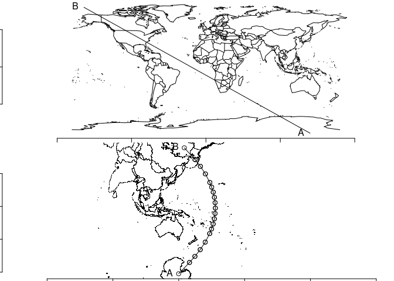
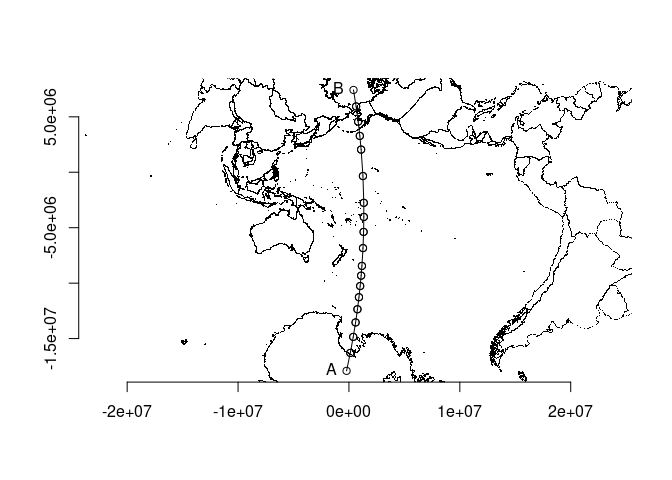

The goal of bigcurve is to adaptively densify lines. Like D3’s Flawed Example by Mike Bostock.
Very WIP, very slow, very messy. Don’t use.
Get in touch if you’re interested! Post an issue to discuss or ping me on twitter.
Installation
You can install the development version of bigcurve like so:
devtools::install_github("hypertidy/bigcurve")Example
This is a basic example which shows you how to solve a common problem.
What’s the point? We get just enough points to carry the curvature of our line from point A to point B (shown in the longlat map) over the shortest distance.
The dist argument controls the minimum distance, but be aware this is very slow and flaky for now.
library(bigcurve)
s <- segment(c(140, -164), c(-89, 80))
#crs <- laea(runif(1, -180, 180), runif(1, -90, 90))
#crs <- "+proj=omerc +lon_0=147 +lonc = 180 +gamma=10 +lat_0=-42"
crs <- "+proj=tmerc +lon_0=147 +lat_0=-42"
op <- par(mfrow = c(2, 1), mar = rep(0.2, 4))
plot(s);maps::map(add = T);axis(1);axis(2); text(s[[1]], lab = c("A", "B"), pos = 2)
plot(ss <- sf::st_transform(bigcurve:::bisect(s, crs, dist = 3e4), crs))
xy <- do.call(cbind, maps::map(plot = FALSE)[1:2])
points(sf::sf_project("OGC:CRS84", crs, xy), pch = ".")
#> Warning in CPL_proj_direct(from_to, as.matrix(pts), keep, warn,
#> authority_compliant): one or more projected point(s) not finite
axis(1);axis(2)
points(sf::st_coordinates(ss)[, c("X", "Y")])
text(sf::st_coordinates(ss)[c(1, length(ss) * 2), c("X", "Y")], c("A", "B"), pos = 2)
par(op)If we take that same path (A to B, shortest distance) in a different projection we get the same path but at different locations, because the curvature is a different situation here.
crs2 <- "+proj=stere +lon_0=180 +lat_0=20"
plot(ss <- sf::st_transform(bigcurve:::bisect(s, crs2, dist = 3e4), crs2))
xy <- do.call(cbind, maps::map(plot = FALSE)[1:2])
points(sf::sf_project("OGC:CRS84", crs2, xy), pch = ".")
axis(1);axis(2)
points(sf::st_coordinates(ss)[, c("X", "Y")])
text(sf::st_coordinates(ss)[c(1, length(ss) * 2), c("X", "Y")], c("A", "B"), pos = 2)
The proper source of goodness is here:
https://bost.ocks.org/mike/example/
Code of Conduct
Please note that the bigcurve project is released with a Contributor Code of Conduct. By contributing to this project, you agree to abide by its terms.